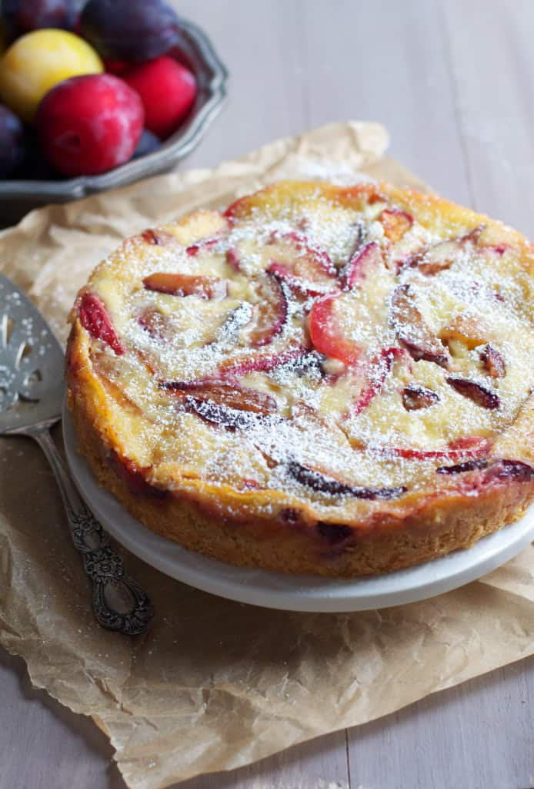

Spiced Plum Custard Cake
This yummy spiced cake would be perfect with a warm cup of tea and a good book. Adapted from The Baker Chick

Ingredients
- 1 Cup All Purpose Flour
- 1 Tablespoon White Sugar
- 1 Teaspoon Baking Powder
- 1/2 Cup Butter cold and cut into cubes
- 2 Tablespoons Heavy Cream
- 1 Egg
- 2 1/2 Cup Plums pitted and sliced
- 1/2 Teaspoon Cinnamon
- 1/4 Teaspoon Ground Nutmeg
- 1/4 Teaspoon Ground Ginger
For the Custard
- 1/2 Cup Heavy Cream
- 1/2 Cup Granulated Sugar
- 1 Egg
- 1 Teaspoon Vanilla Extract
Instructions
- Prehead over to 350F
- Toss the sliced plums with the spices and set aside. In a large bowl, stir together the flour, 1 tablespoon of sugar and baking powder. Add the cubes of butter and, using your hand or a pastry blender, cut into the butter until coarse crumbs form. Stir in 1/2 teaspoon of vanilla, 2 tablespoons of cream and 1 egg. Continue to stir until well combined
- Turn the dough into the bottom of the pan and press in with your fingers. Arrange spiced plums over the dough. Bake for 20-25 minutes
- While cake is baking, prepare the custard by whisking together 1/2 cup of cream, 1/2 cup of sugar, vanilla, and egg
- When cake is done baking, pour the custard over the plums, and return to over to bake another 20-25 minutes or until custard is set
- Cool before eating. Enjoy warm or cold. Can be stored in the fridge